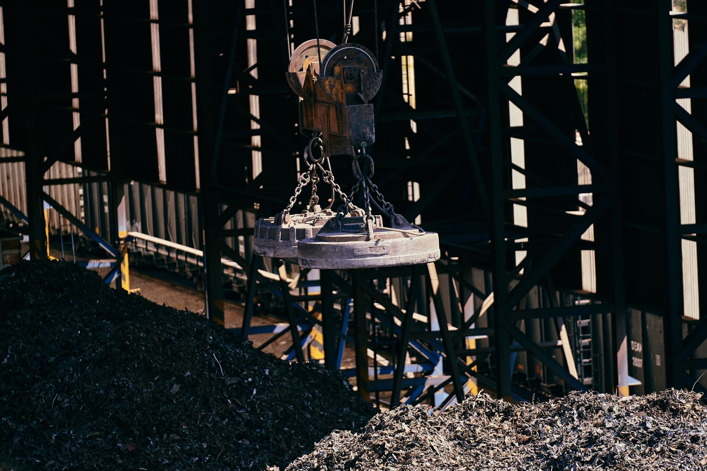

K-피지컬AI, 소재 조달 없인 로봇 못 만든다

한국피지컬AI협회가 2026년 8월 25일 'K-피지컬AI' 전략 포럼을 개최하며 AI·반도체·로봇 생태계 통합 방안을 논의한다. 산업용 로봇 1대에는 평균 1~2kg의 네오디뮴(Nd) 영구자석이 사용되며, 전 세계 네오디뮴 생산의 약 90%는 중국이 통제한다.
2025년 글로벌 휴머노이드 로봇 시장 규모는 약 17억 달러이며, 2030년까지 연평균 50% 이상 성장이 전망된다. 피지컬AI 로봇의 관절 액추에이터에는 SiC 전력 반도체도 필수인데, SiC 기판 생산의 약 65%는 미국 울프스피드(Wolfspeed)·II-VI(Coherent) 등이 담당하고 중국이 기판 시장에서 약 20%로 빠르게 추격 중이다.
한국 정부는 2026년 AI·반도체·데이터센터 삼각축에 1,600조 원 규모 메가프로젝트를 선언했으나, 로봇 액추에이터용 희토류 자석 소재 조달 계획은 공식 발표에서 빠져 있다. LS에코에너지는 희토류 공급망 다변화를 추진 중이나 연간 조달 목표량은 아직 미공개 상태다.
중국은 2024년 10월 희토류 영구자석 수출에 허가제를 도입했으며, 심사 기간이 평균 45~60일로 납기 불확실성이 확대됐다. 한국의 2024년 대중 희토류 수입 의존도는 여전히 약 80% 수준이다.
피지컬AI가 '다음 먹거리'로 선언되는 순간, 그 밑단의 소재 공급망이 중국에 80~90% 잠겨 있다는 모순이 드러난다. 반도체 칩 설계·소프트웨어 스택보다 먼저 막히는 것은 영구자석 소재다. 양산 단계에서 소재 병목이 오면 K-피지컬AI 전략 전체가 흔들린다.
SiC 기판과 희토류 자석이 동시에 외부 통제에 묶이면, 한국 로봇 기업은 완성품 설계 능력이 있어도 부품을 조달하지 못해 양산 지연이 현실화된다. 테슬라 옵티머스·Boston Dynamics Atlas가 이미 희토류 자석 공급망 다변화에 수억 달러를 투입한 것은 이 리스크의 현실적 선례다.
일본 신에츠화학·TDK는 네오디뮴 영구자석 탈중국 정제 능력을 보유한 대안 공급자다. 신에츠화학의 희토류 자석 연간 생산량은 약 3만 톤으로, 중국 규제 강화 시 한국 로봇 기업의 주요 조달처로 부상한다.
LS에코에너지·성림첨단산업 등 국내 희토류 가공·자석 기업은 정부 소부장 지원 1,700억 원 확대 국면에서 투자 유치 기회가 열린다. 성림첨단산업은 국내 유일 네오디뮴 자석 생산 업체로, 피지컬AI 수요 가시화 시 수혜가 집중될 수 있다.
현재 자체 소재 조달 전략 없이 로봇 하드웨어 개발에만 집중하는 국내 스타트업들은 양산 단계에서 소재 병목으로 출하 지연 리스크를 안게 된다. 시제품과 양산 사이의 '죽음의 계곡'이 소재 병목으로 더 깊어진다.
국내 SiC 기판 내재화는 2027년 이전 상업화가 어렵다. SK실트론이 SiC 기판 생산을 추진 중이나 현재 연간 생산 목표는 수만 장 수준으로, 피지컬AI 로봇 양산 수요를 충족하기에는 규모가 부족하다.
피지컬AI 전략을 추진하는 기업은 제품 BOM(부품 명세서) 단계에서 영구자석 등급과 원산지를 명시하고, 중국산 비율이 50%를 초과하면 일본·유럽 대체 소싱 루트를 즉시 개발해야 한다. 신에츠화학·TDK와의 장기 공급 MOU 체결이 가장 빠른 리스크 헤지 수단이다.
정부는 1,600조 원 메가프로젝트 내에 '피지컬AI 소재 조달 로드맵'을 별도 항목으로 편성해야 한다. 희토류 자석·SiC 기판·탄탈럼 커패시터를 로봇 양산 3대 소재로 지정하고, 2027년까지 대중 의존도를 50% 이하로 낮추는 수치 목표를 제시해야 실행력이 생긴다.
성림첨단산업·LS에코에너지 등 국내 희토류 가공 기업에 대한 소부장 지원 예산 집행을 2026년 내 앞당겨야 한다. 현재 지원 집행 속도로는 2028년 피지컬AI 양산 수요에 맞춰 국내 공급망이 준비되지 않는다.
실제 조달 현장에서는 — 희토류 자석 구매 협상 테이블에서 '중국산 45% + 일본산 55%' 혼합 소싱을 제안하면 가격은 10~15% 높아지지만 납기 안정성이 확연히 달라진다. 단가 최저 입찰보다 납기 보장 조항을 우선 협상 조건으로 올리는 것이 피지컬AI 양산 일정을 지키는 현실적 방법이다.
이 포스팅은 쿠팡 파트너스 활동의 일환으로 수수료를 제공받습니다.